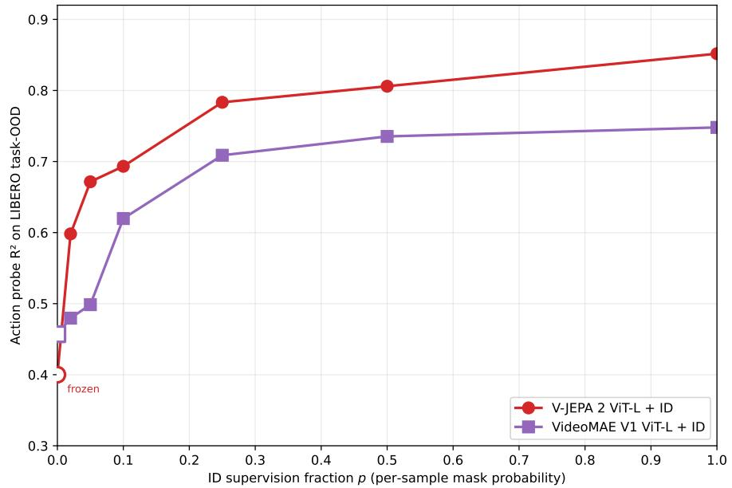

What Makes Video World Model Latents Action-Relevant: Prediction over Reconstruction Jewon Yeom, Hanseul Kim, Jeongjae Park, Sungmok Jung, Jaejin Lee, Taesup Kim；机构信息未在 arXiv 元数据中列出。 arXiv 新增 原文链接
Figureure 1 · : Pixel fidelity and frozen action-relevant structure across backbone Figure 1: Pixel fidelity and frozen action-relevant structure across backbone families on LIBERO. PSNR is rollout PSNR for pixel-producing backbones and decoder PSNR for encoderonly backbones (a 17M pixel decoder on the frozen representation); action $R ^ { 2 }$ is measured on the frozen trunk before ID supervision. The two axes are uncorrelated: at PSNR ≈ 20 dB, action $R ^ { 2 }$ spans −0.01 to +0.46, and pixel-reconstruction backbones (SDXL VAE, Cosmos-1) attain the highest PSNR but the lowest action $R ^ { 2 }$ . The ID multiplier (Section 4.2) is what separates the otherwiseclustered video-SSL, DIFF, and LAPA families.这张图来自论文 PDF 的结构化抽取。当前用于辅助理解 What Makes Video World Model 的方法或实验，请结合正文精读段落一起看。

Figureure 4 · : ID supervision sample-budget sweep on V-JEPA 2 ViT-L and VideoMAE V1Figure 4: ID supervision sample-budget sweep on V-JEPA 2 ViT-L and VideoMAE V1 ViT-L. x-axis: fraction p of mini-batch samples receiving ID gradient (per-sample mask probability). yaxis: action probe $R ^ { 2 }$ on LIBERO task-OOD, mean of 3 probe seeds. Endpoints at $p { = } 0$ are the frozen baselines; endpoints at $p { = } 1$ are the standard ID fine-tunes (V-JEPA re-run at 20k steps for step-matched comparison). V-JEPA captures +0.20 R² lift from just 2% ID supervision (effectively ∼1600 samples receiving ID gradient over 20k×4 batch slots), and reaches 65% of the full $p { = } 1$ lift at $\scriptstyle { p = 0 . 1 0 }$ . VideoMAE scales more linearly and gains little below $\scriptstyle { p = 0 . 1 0 }$ .这张图/表用于判断 What Makes Video World Model 的实验收益来自哪里。重点看替换、消融或跨模型设置下趋势是否一致，而不是只看单个最高分。
核心问题
通用视觉自监督正在从静态图像 encoder 走向视频 world model；这篇把“预测 latent 是否比重建像素更有用”问得很直接。